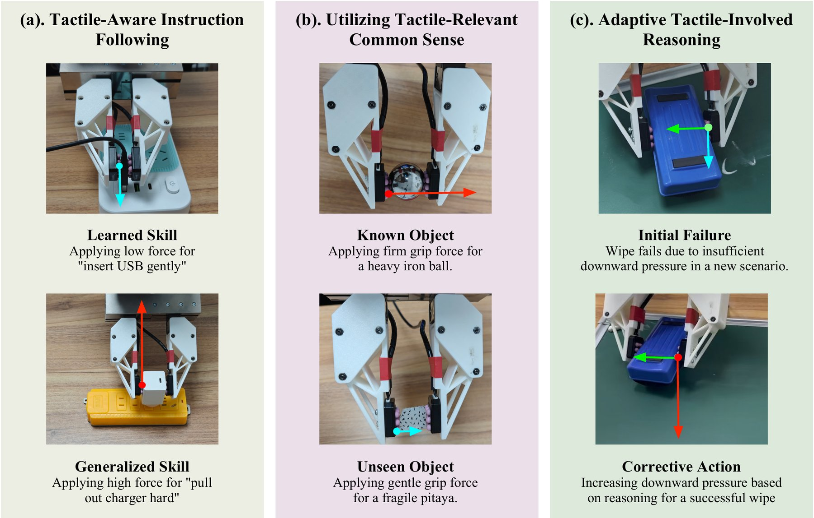
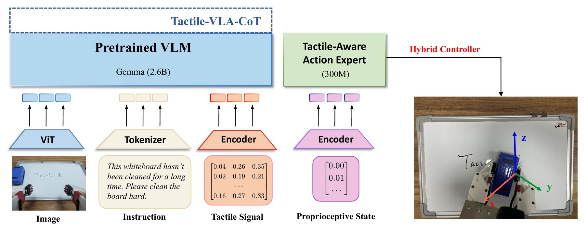
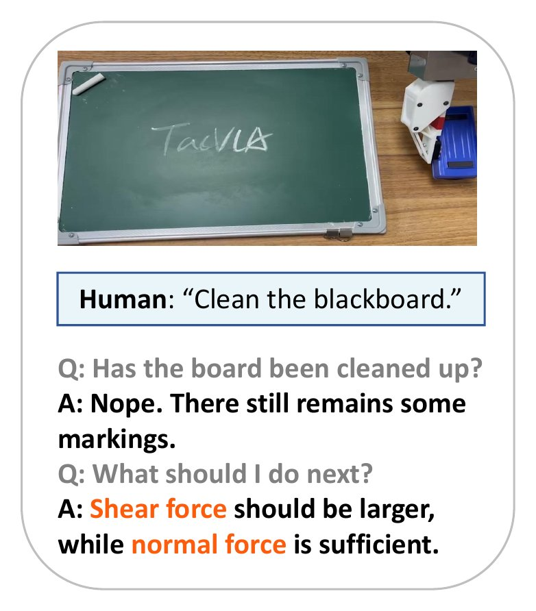
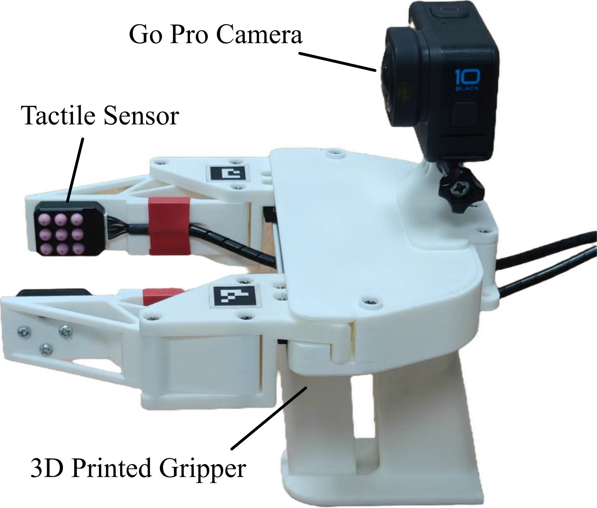
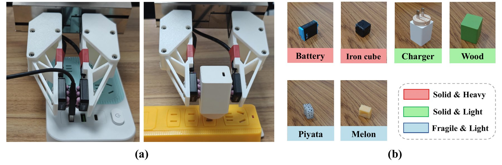
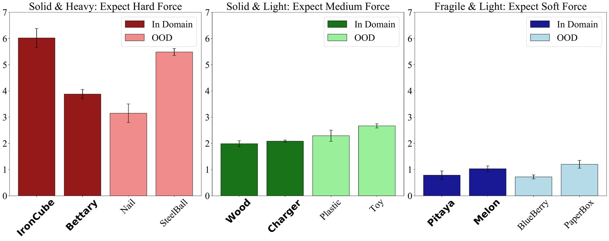
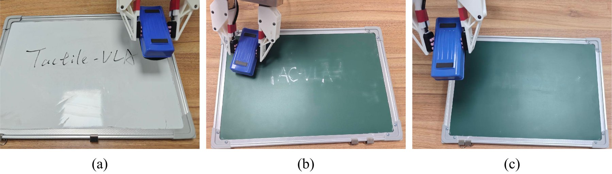

先把整篇论文压成四段
做了什么
给 π0 接上指尖触觉，让指令里的「轻一点 / 用力」变成具体的施力大小；再加一个 CoT 变体，失败时根据触觉读数自己找原因、改指令。
怎么做到
触觉历史经 MLP 压成 1 个 token，和图像、语言 token 一起进 VLM 前缀。动作专家同时输出目标位置和目标力。底层控制器把「力误差」折算成位置偏移去执行。
结果
插拔成功率 USB 35%、充电器 90%（π0-base 为 5%、40%）。四个没训过的副词，力按词义排开。6 个没见过的物体抓取成功率 80–100%。没见过的黑板上，CoT 版成功率 80%，两个基线都是 0。
读的时候要打的折扣
除抓取实验外都没写试验次数，力的均值没有方差。没有消融能把「VLM 先验」和「多了力通道和控制器」分开。只有 3 类任务、一种夹爪。
VLA 知道「拿苹果」，不知道「轻轻地拿」
现有 VLA 依靠预训练的视觉语言骨干，在语义理解和任务规划上泛化很好。但接触密集的任务（插拔、抓易碎物、擦板）要控制的是力，而视觉和语言只给出高层语义。触觉能提供局部、随时间变化的接触信息，但作者指出，已有工作大多把触觉当作补充的感知输入，没有让它直接参与动作生成。
论文想推进的是 VLA 的「怎么做」：同样是 pick up the apple，模型要能区分 pick up the apple softly。作者把这个目标拆成三种能力，恰好对应第 3 节的三个实验：
- 触觉相关的指令跟随：理解 softly、hard 这类力度副词，并迁移到只学过动作的新任务上（RQ1，§3.2）。
- 触觉相关的常识：不给力度指令，看到物体就知道该用大力、中等力还是小力（RQ2，§3.3）。
- 基于触觉的自适应推理：失败后根据触觉反馈用链式推理找原因，改变施力（RQ3，§3.4）。

相对 π0，只改了三处
Tactile-VLA 的骨架就是 π0：预训练 VLM 处理前缀，一个动作专家用流匹配生成动作。作者的改动集中在三个地方，外加一个推理变体。
① 触觉进前缀
最近 H 步触觉读数拼接后经 MLP 压成 1 个 token，与 H 帧图像 token、语言 token 拼成前缀，前缀内部做非因果注意力。
② 力进动作空间
动作专家输出的 at 同时包含目标位置 Ptarget 和目标接触力 Ftarget，两者都由示范监督，用 CFM 损失一起训练。
③ 底层混合控制器
位置主导：力误差超过阈值 τ 时，按增益 K 折算成位置修正，再由 PID 跟踪。外部合力和夹持力分两个通道控制。
下面是按 Figure 2 重画的结构图。点击任意模块，可以看到论文对它的原文描述和我们的注解。数据流从上往下读。

前缀里到底放了什么
- 图像：预训练 ViT 编码最近 H 帧，每帧一组 token，论文说做法「similar to π0」。
- 语言：普通 tokenizer。力度信息全靠这一路进来。
- 触觉：最近 H 步读数先拼接，再经 MLP（E′ψ）压成单个融合 token。触觉采集是 100 Hz，训练前下采样到和 20 Hz 图像帧对齐。
- 整个前缀内部是非因果注意力，图像、语言、触觉 token 可以互相看。作者强调这种 token 级早融合是 CoT 变体能对触觉做推理的前提。
怎么训练
「共享组件」用 π0 的预训练参数初始化。新增模块，包括触觉编码器和修改过的动作专家，都是随机初始化。然后整个模型端到端微调，用条件流匹配（CFM）损失，损失同时覆盖动作序列的运动维度和力维度。作者认为正是这个训练让模型去调用 VLM 里潜在的物理知识，把 gently 这样的语言差别映射到 0.5 N 这样的力。
解读 动作专家随机初始化这一点容易被忽略。所以说「继承 π0」，继承的主要是 ViT 和 VLM，动作生成部分是从这几百条示范重新学的。论文没给 H、动作块长度、训练步数，也没给 Ftarget 的维数和坐标系。
模型说「用 6 N」，机器人怎么照做
动作专家给出目标位置和目标力之后，还需要一个底层控制器平衡这两个目标。作者的策略是位置主导：多数操作由精确的运动主导，只有接触阶段才需要力控（引 Raibert & Craig 1981），所以最终下发的仍然是位置指令。力目标用受阻抗控制启发的间接力控实现，折算成对位置指令的修正。
和经典阻抗控制追求被动柔顺不同，这里要主动跟踪目标力。控制器计算力误差 ΔF = Ftarget − Fmeasured，只有误差超过阈值 τ 才修正位置，作者说这样是为了运动更平顺：
K 是增益矩阵。之后由 PID 控制器驱动关节去跟踪不断更新的 Phybrid。
夹爪的笛卡尔位置 → 外部合力
控制夹爪对物体施加的合力，比如插拔时往下压、擦板时往板上压。
夹爪开度 → 夹持力
并行地控制夹爪把物体夹多紧，决定抓鸡蛋和抓铁块的区别。
式 (2) 看着简单，但阈值和比例修正放在一起有一些不直观的后果。下面的小模拟按式 (2) 字面实现了一维按压：夹爪往一块有弹性的表面上压，看测到的力怎样追目标力。先点几个预设，再自己拖参数。
- 稳定后的力（最后 1 s 均值）
- 离目标还差
- 修正开启比例（最后 2 s）
- 开关切换次数（最后 2 s）
模型设定（我们的简化）：接触是线性弹簧 F = k·max(0, x)，x 是压入深度（mm）；PID 跟踪简化成一阶滞后；力传感器有 0.05 N 噪声；控制频率按触觉的 100 Hz 算。论文没有给 K、τ 的数值，这里的参数全部是虚构的，只用来看式 (2) 的行为。
解读 从模拟里能读出三件事。第一，Ptarget 本身来自示范，在训练时的表面上它产生的力就接近目标，修正项不起作用；换了刚度不同的表面，修正项才开始干活。第二，式 (2) 是纯比例修正，修正量要靠误差本身维持，所以力会停在离目标还有一段距离的地方，K 越大偏差越小。第三，阈值和比例修正叠加时，如果 τ 相对偏差太宽，修正会在死区边界反复开关。论文说设 τ 是为了平顺，实际系统可能有滤波或其他处理，论文没写。另外，策略每个动作块都会重新输出 Ptarget，这个外层闭环也可能吸收一部分偏差。
失败以后，让模型自己说出「力不够」
CoT 变体用 VLM 自己的预训练解码器生成一段显式的「内心独白」，分析失败原因并给出纠正动作。训练用一小批针对性的示范：每条样本记录一次具体的失败，把多模态传感数据和一段分析失败原因的语言标注配在一起。作者说这样做有两个目的，一是保住 VLM 的通用推理能力、减少微调带来的灾难性遗忘，二是把推理扩展到触觉模态，比如从传感信号推断「擦板时向下压力不够」「剪切力显示工具在打滑」。
运行时，CoT 按固定间隔触发，间隔多长论文没给。提示词先让模型判断任务是否完成；如果判定失败，再让模型结合传感反馈分析原因。输出会逐项分析各个力分量，然后写出一条新的纠正指令，用来指导下一次尝试。
在擦板任务里，训练数据是白板上的 100 条成功示范和 100 条失败示范。失败样本配的监督文本类似 "The force was too light. A stronger force is needed. Now trying with 5N." 下面按论文 §3.4 和 Figure 3 把黑板上的一次零样本执行拆成五步。
默认5
白板数据6.7
纠正后8 N
解读 这里的「推理」是 VLM 解码器在语言层面生成的，它把失败归因写成文字，再用一条新的指令驱动下一次尝试。它不预测未来的触觉或画面，也没有价值模型给动作打分。它能在黑板上起作用，一个合理的解释是：白板训练数据里已经有「力太轻 → 加力 → 成功」这个模式，黑板上复用的是同一个模式，只是需要加得更多。论文没有对照「不看触觉的 CoT」或「失败就加力的固定规则」，所以说不清触觉读数在归因里具体起了多大作用。
还有一处前后不一：Figure 3 的回答是 "Shear force should be larger, while normal force is sufficient."，而正文举的例子是 "normal force is too low"、新指令 "apply more downward force"，Figure 1(c) 也写的是增加向下压力。

用手持夹爪采「带着手感」的示范
作者认为常规遥操作不适合采这类数据：操作者没有力反馈，采出来的策略天然不依赖触觉。所以他们在 UMI（Universal Manipulation Interface，一种便携的手持示教夹爪）的基础上，给夹爪装了两块高分辨率触觉传感器，能测法向力和剪切力。操作者手持夹爪示教，直接感受到接触，示范就是「按手感」做出来的。
时间同步：每次采集前对齐各路数据的时间戳；采集时触觉 100 Hz、视觉 20 Hz，之后把触觉下采样到与图像帧对齐。得到的数据集作者叫 VLA-T。
论文没有写传感器型号、部署时用的机械臂型号，也没说明从触觉读数到以牛顿为单位的 Ftarget 标签是怎么标定的。

三类任务与数据量
对比方法：π0-base（通用 VLA 流匹配模型）、π0-fast（π0-base 的变体）、Tactile-VLA、Tactile-VLA-CoT（只在擦板任务上评测）。论文对基线的描述是「没有我们的触觉融合结构」，没写基线用哪批数据微调、指令里是否带了同样的力度副词。
| 任务 | 训练示范 | 训练指令 | 测什么 | 每个条件的试验次数 |
|---|---|---|---|---|
| USB 插拔（Task A） | soft、hard 各 100 条 | 带力度副词，例如 pull out and insert the USB softly into the left socket | 成功率（Table 1）；训过的词和四个新副词下的施力（Table 2） | 未写 |
| 充电器插拔（Task B） | 100 条 | 只有动作，不含 softly / hard | 成功率（Table 1）；零样本 softly / hard 下的施力（Table 2） | 未写 |
| 桌面抓取 | 每个物体 50 条，6 个训练物体 | 论文没写指令形式 | 6 个训练内（ID）和 6 个没见过（OOD）物体的成功率（Table 3）与施力（Figure 6） | 成功率每物体 10 次；施力 5 次均值 |
| 擦板 | 白板上 100 条成功 + 100 条失败 | Wipe the board. | 白板（ID）与黑板（OOD）成功率（Table 4） | 未写 |

三个实验，逐个看数字
下面的图表数字全部取自论文 tex 源码中的表格。每张图下面可以展开原表。
RQ1 · 力度副词能不能迁移到新任务
实验设计：两个运动学上相似的任务。USB 任务的示范带 softly / hard 指令；充电器任务只学动作，训练时从没出现过力度词。测试时，在两个任务上都下达带副词的指令，看成功率和实际插入力。
论文的解读：在 USB 任务上，Tactile-VLA 对 softly 用 0.51 N、hard 用 2.57 N；没训过的 gently（0.75 N）和 firmly（1.98 N）落在中间；harder 用了 2.94 N，比训练过的 hard 还大，作者称之为「外推」。在只学过动作的充电器任务上，hard 用 9.13 N、softly 用 4.68 N。两个基线的施力和副词没有相关性。成功率方面，作者把 Tactile-VLA 的优势归因于触觉的深度融合，使插入的接触阶段控制更精确，减少了对不准和用力过猛导致的失败。
解读 有三点值得注意。一是迁移到充电器的是相对关系，不是绝对力：充电器上 softly 的 4.68 N 比 USB 上 hard 的 2.57 N 还大，hard / softly 的比值从 USB 上的约 5.0 倍压缩到约 1.95 倍。二是 rigidly（2.42 N）和 hard（2.57 N）很接近，harder 比 hard 多 0.37 N，这些都是单个均值，没有方差和次数，无法判断差异是否显著。三是两个基线不输出力、没有力控制器，只能通过位置间接改变力，它们「分不开副词」一部分是结构决定的。另外，Tactile-VLA 在 USB 任务上的成功率本身只有 35%。
RQ2 · 没见过的物体，知不知道该用多大力
实验设计：三类物体，期望的抓取力分别是大（硬且重）、中（硬且轻）、小（易碎且轻）。训练时每类 2 个物体，每个 50 条示范；测试时加入每类 2 个新物体。成功的定义是一次抓起、没有可见变形。抓取时不给力度指令，看模型自己选的力。

论文的解读：Tactile-VLA 在 ID 和 OOD 物体上都明显高于基线，易碎物体上尤其明显；Figure 6 显示它对没见过的物体也选对了大、中、小力。作者认为这是 VLM 知识迁移到触觉模态的有力证据。
解读 基线在易碎物体上几乎全是 0（blueberry、paper box 都是 0%），而 Tactile-VLA 是 90–100%。这个差距很大一部分可能来自「有没有夹持力通道」：基线只能控制夹爪开度，没有力闭环，捏碎软物体几乎是必然的。要证明「VLM 常识」在起作用，更有说服力的对照应该是同样有力通道、但 VLM 没有预训练或被替换的版本。另外，Table 3 的表注写着「training primarily focused on medium-stiffness items」，和正文「每类都训练」的描述对不上。
RQ3 · 从白板学的推理，能不能用到黑板上
实验设计：训练只用白板（马克笔），测试换成黑板（粉笔，需要更大的力才擦得掉）。指令只有 Wipe the board.
6.7 N 比白板训练数据里的 5 N 高 34%。论文只给了这一组数值，没说是单次执行还是多次平均。

论文的解读：白板上 Tactile-VLA 成功率高，明显超过基线。黑板上差别更明显：Tactile-VLA-CoT 靠推理加力成功，基线完全失败。作者说基线能复现擦的动作，但无法理解触觉上的失败，也没法加力，只会重复同样无效的低力动作。
解读 不带 CoT 的 Tactile-VLA 在黑板上也有 15%，说明单靠触觉闭环和控制器已经能偶尔擦掉；CoT 把它提到 80%。白板上 CoT 版（75%）反而比普通版（80%）略低，差 5 个百分点，在次数未知的情况下看不出是否有意义。
「VLM 先验里已经有物理交互语义」，证据有多强
这是全文的核心主张，摘要、引言和结论都在重复它。下面把支撑它的证据逐条过一遍。左侧三个点代表我们判断这条证据对这条主张的支持力度，三个点全亮是强。解读
没训过的副词，力按词义排开（Table 2，USB）
gently、firmly、rigidly、harder 都没出现在训练指令里，施力顺序和词义一致。这是最直接支持「语言先验」的一条：词义的远近来自预训练的语言表示。不足之处是每个词只有一个均值，没有方差和试验次数。
softly / hard 迁移到充电器（Table 2）
充电器任务的训练里没有力度词，零样本下 hard 的力约是 softly 的两倍。说明「副词 → 力」的映射在一定程度上和任务解耦了。但迁移的是方向，绝对值和比例都变了。
没见过的物体选对了力（Table 3、Figure 6）
结果本身很强，但对「VLM 常识」的支持偏弱：部分新物体和训练物体在外观、材质上相近（例如钢球和铁块），视觉相似度也能解释一部分；成功率的差距又和基线缺少夹持力通道混在一起。
黑板上靠 CoT 加力（Table 4）
支持的其实是另一条主张：用触觉反馈做语言推理有用（15% → 80%）。但训练数据里已有「力太轻 → 加力」的文本模式，黑板复用的是同一模式。
能直接隔离「VLM 先验」的消融
没有。Tactile-VLA 和基线同时差了三样东西：触觉输入、动作里的力、混合控制器。没有「去掉 VLM 预训练」「冻结 VLM」「只加力通道不加触觉输入」这类对照，所以三类泛化各自有多少来自 VLM 先验，论文没能分开。
容易看错的地方
- 「零样本」零的是什么。充电器任务有 100 条动作示范，零的只是力度词；OOD 物体属于训练过的三个类别；黑板任务的动作和推理模式都在白板上练过。它们都不是「从没见过的任务」。
- 力不是直接下发的。模型输出的是目标力，控制器把力误差折算成位置偏移，最终仍是位置控制。
- 动作专家是重新训练的。论文明确说修改后的动作专家随机初始化，不沿用 π0 的动作专家权重。
- 两处次数不一样。Table 3 的成功率是每物体 10 次，Figure 6 的力是 5 次均值。Table 1、2、4 没写次数。
- Table 1 的 π0-base 在 Table 2 里写作 π0。从上下文看是同一个基线。
常见问题
触觉进的是 VLM 前缀，还是动作专家？
按式 (1) 和 Figure 2，触觉经 MLP 变成 1 个 token，放进 VLM 前缀，与图像、语言 token 一起做非因果注意力。本体状态则经编码器接到动作专家。作者强调早融合是为了让 VLM 能对触觉做推理（CoT 变体需要）。
模型输出的「力」怎样变成机器人的动作？
动作专家输出 Ptarget 和 Ftarget。控制器测量实际接触力，力误差超过阈值 τ 时，在 Ptarget 上叠加 K·ΔF 的位置修正，然后由 PID 驱动关节跟踪。外部合力用夹爪的笛卡尔位置控制，夹持力用夹爪开度控制。可以回到上面的模拟看式 (2) 的具体行为。
Ftarget 的标签从哪来？
论文说目标位置和目标力都来自专家示范，示范用装了触觉传感器的 UMI 手持夹爪采集。从触觉读数到以牛顿为单位的力标签如何换算，论文没写。
一共用了多少示范？
USB 200 条（soft、hard 各 100），充电器 100 条，抓取 6 × 50 = 300 条，擦板 200 条（100 成功 + 100 失败），合计 800 条。论文没说是一个模型联合训练所有任务，还是每个任务单独训练。
基线 π0 能不能控制力？
它们没有触觉输入，动作里也没有力，只能通过位置间接影响接触力。论文对基线的描述只有「没有我们的触觉融合结构」，没说它们用什么数据微调、指令是否一样。
CoT 什么时候触发？会不会拖慢控制？
论文说按固定间隔触发，让模型定期检查进展，间隔长度没给。推理耗时、是否会暂停执行，论文也没有讨论。
论文没说的，和我们读出来的
论文自己承认的：没有。全文没有局限性章节，结论只重申了主张。相关工作一节把自己和同期工作区分开：FuSe 靠辅助损失微调，ForceVLA 靠模态专属路由，而本文的主要贡献是证明 VLM 的隐空间已经有物理交互语义。
我们读出来的，按类型分成四组。解读
统计
- Table 1、2、4 没写每个条件试验多少次。成功率都是 5 的倍数，可能是 20 次左右，这只是推测。
- Table 2 的力只有均值，没有方差。harder 比 hard 大、rigidly 和 hard 的差别都无法判断是否显著。
- 黑板上 3.5 N → 6.7 N 只给了一组数值，没说是单次执行还是多次平均。
归因
- 没有消融把触觉输入、力动作、混合控制器、VLM 预训练四者的贡献分开。
- 基线结构上不输出力，Table 2 和 Table 3 的对比有一部分是结构差异，不全是「语义理解」差异。
- CoT 缺少「不看触觉的推理」和「失败就加力的固定规则」这类对照。
范围
- 只有 3 类任务、一种平行夹爪、桌面场景。
- OOD 物体仍属训练过的三个类别；「零样本」的范围比字面窄。
- USB 任务成功率只有 35%，绝对水平不高，论文没分析失败原因。
文内不一致
- Figure 1(b) 把火龙果标为没见过的物体、铁球标为已知物体；Table 3 和 Figure 5 里火龙果是训练内物体，钢球（Steel Ball）是 OOD。
- §2.3 描述 CoT 微调数据时举的例子是「wiping a blackboard with slippage」，而 §3.1 和 §3.4 都说训练中从没出现过黑板。
- Figure 3 说「剪切力要更大，法向力够了」，正文和 Figure 1(c) 说要加大向下的压力。
- Table 3 表注说训练主要针对中等刚度物体，正文说每类都训练了。
- 黑板指令正文是 Wipe the board.，Figure 3 是 Clean the blackboard.
| 复现需要但论文没给的 | 论文里的说法 |
|---|---|
| 历史长度 H | 只有符号，没有数值 |
| 增益 K、阈值 τ | K 是增益矩阵，τ 是预设阈值，都没给数值 |
| Ftarget 的维数与坐标系 | 只说分外部合力和夹持力两个通道 |
| 动作块长度、训练步数、学习率 | 没有 |
| CoT 触发间隔、提示词全文 | 「fixed intervals」，提示词只描述了结构 |
| 机械臂与触觉传感器型号 | 传感器只说「dual high-resolution tactile sensors」，能测法向和剪切力 |
| 代码与数据 | 论文没有提到是否发布 |
力和触觉怎样进入机器人基础模型
力与触觉专题现在收了七篇：ForceVLA、Tactile-VLA、T-Rex、N₀-VTLA、N₀-TWAM、Motus2、ME-Dex 1.0。按「力 / 触觉在模型里扮演什么角色」排，大致是一条由浅到深的线，窄屏下可左右滑动。这个排法是我们的归纳。解读
ForceVLA
6 轴力 / 力矩作为一等模态，在动作解码阶段用力感知 MoE 与视觉语言嵌入融合。
Tactile-VLA
触觉 token 早融合进 VLM 前缀；动作里带目标力，由混合控制器执行；语言直接调节力。
T-Rex
主干不看触觉；去噪的最后一段交给只读触觉的专家，块内每 4 步用最新触觉重跑。
Motus2
一套权重给出策略、模拟器、评估器三个接口；旁路触觉专家沿用 T-Rex 的切分去噪修正动作。
N₀-VTLA
不给动作专家当前触觉，而是先预测接下来一个动作块里触觉的净变化 z。
ME-Dex 1.0
未来触觉和视频、动作一起用 flow matching 联合去噪生成，触觉与视频同为「世界状态的观测」。
N₀-TWAM
未来触觉与未来视频一起生成；当前触觉转成力图，经交叉注意力直接进动作流。
| 论文 | 模型形态 | 力 / 触觉信号 | 怎样进入模型 | 数据与评测 |
|---|---|---|---|---|
| ForceVLA 2505.22159 · 复旦 / 上交 | 基于 π0 的 VLA | 6 轴力 / 力矩 | FVLMoE：在动作解码阶段按上下文路由到模态专属专家，融合 VL 嵌入与实时力反馈 | 自采 ForceVLA-Data，5 个接触密集任务；平均成功率比 π0 基线高 23.2% |
| Tactile-VLA 2507.09160 · 清华等 | 基于 π0 的 VLA（Gemma 2.6B + 300M 动作专家） | 双指尖触觉，法向 + 剪切，100 Hz | H 步历史经 MLP 成 1 个 token 进 VLM 前缀；动作输出带目标力；混合位置-力控制器执行；CoT 变体用触觉做语言推理 | UMI 手持采集，3 类真机任务共 800 条示范；主打语言、常识、推理三类零样本泛化 |
| T-Rex 2606.17055 · UC Berkeley / NVIDIA 等 | Qwen3-VL-2B 三专家 MoT（latent / 动作 / 触觉） | Sharpa Wave 灵巧手 10 指：6 轴力历史 + 当前力 + 形变深度图 | 独立触觉专家读主干 KV 缓存，只做去噪最后一段（τ 0.4 → 0），块内 4 次 | 人类视频预训练 + 100 小时带触觉遥操作中训练；双臂灵巧手真机 12 任务，平均 65 分 |
| N₀-VTLA 2607.23782 · NeoteAI / 复旦 | 基于 π0.5 的 VLA，加潜在触觉预测器 | 自研视觉式触觉，当前帧减回合起始帧的差分图 | 预测器输出 10 个 token z（训练初期对齐未来 50 步触觉变化），拼在动作 token 前；不进 VLM 前缀 | NeoData 视触觉预训练；NeoReal 真机 9 任务 + 20 个仿真任务；另有离线 RL 方法 ALTER |
| N₀-TWAM 2607.23783 · NeoteAI / 复旦 | 视频、触觉、动作三专家世界动作模型，7.16B | 视觉式触觉；预测用 Wan VAE 潜变量，观测用三轴力图 | 未来触觉与视频共同去噪；当前触觉经 NeoForce 编码、交叉注意力进动作流 | NeoData 超 3 万小时；UniVTAC、NeoSim 仿真 + 8 个真机任务 |
| ME-Dex 1.0 2609.21449 · 理想汽车 | 世界动作触觉模型，MoT 三专家（Video / Tactile / Action），均用 flow matching | 多来源异构触觉，经 Canonical Hand Model 与 Unified Tactile Autoencoder 统一 | 专家间共享注意力，触觉作为未来观测与视频、动作联合去噪 | Agentic Tactile Data Engine 在仿真轨迹回放中补录力传感器数据；RoboTwin、DexJoCo、ManiFeel 仿真与真机 |
| Motus2 2608.30237 · 清华朱军组 / GensPI | 自进化通用世界模型：策略、动作条件模拟器、价值评估器共享权重 | 触觉反馈（作为扩展加入） | 策略提出候选动作块，模拟器预测视觉后果，评估器打分，形成决策与学习闭环 | 单目第一视角 → 双目第一视角 → 机器人域适配；仿生双臂双灵巧手平台 |
ForceVLA、ME-Dex 1.0、Motus2 三行只取自各自摘要级别的概括；T-Rex、N₀-VTLA、N₀-TWAM 三行来自对应的精读页。细节以各篇页面为准。
和其余六篇的异同 解读
和 ForceVLA：两篇几乎同期，都从 π0 出发、都做真机接触密集任务。区别在融合位置和论点。ForceVLA 在动作解码阶段用 MoE 融合力信号，VLM 部分不需要「看到」力；Tactile-VLA 把触觉早融合进 VLM 前缀，代价是改动了 VLM 的输入，好处是 VLM 可以对触觉做语言推理，CoT 变体正依赖这一点。论点上，ForceVLA 的主要结果是成功率提升，Tactile-VLA 主打语言到力的语义泛化。Tactile-VLA 在相关工作里把 ForceVLA 归为「modality-specific routing」一类。
和 ME-Dex 1.0：ME-Dex 的摘要批评「只把触觉特征当条件输入、不联合预测未来触觉」的做法，Tactile-VLA 正属于这一类：它读当前触觉、输出目标力，但不预测未来触觉或画面。另外 ME-Dex 要处理多种手、多种传感器布局，并用仿真回放补数据；Tactile-VLA 只有一种夹爪、一种传感器，数据全部来自真实手持采集。
和 Motus2：两篇都用到了失败数据，用法完全不同。Tactile-VLA-CoT 把失败翻译成语言（为什么失败、下次怎么改），在真机上定时自检；Motus2 按其摘要，用失败和次优交互去学动力学和价值，在学到的模拟器里提出、预测、评估候选动作。前者的「自我纠正」停留在语言层面、一次一条指令，后者是有预测和打分的闭环。
和 T-Rex：T-Rex 把 Tactile-VLA 当作基线复现，这是专题里唯一一个第三方复现 Tactile-VLA 的数字。它把原版的 GelSight 图像输入改成 10 指 6 维力，用 Simple-MLP 编码，每个任务单独训练；动作空间和评测协议与其他基线统一，没说是否保留混合位置-力控制器。结果是 12 个双臂灵巧手任务平均 15 分，比不接触觉的 π0.5（17）还略低，T-Rex 是 65。这个复现换了传感器、本体和控制方式，不能直接当成对原论文的否定，但它说明“触觉 token 进前缀”这套做法搬到灵巧手上并不自然见效。
和 N₀-VTLA：N₀-VTLA 直接拿 Tactile-VLA 当反面例子：把触觉 token 拼进视觉语言上下文，相当于把触觉当成“又一个相机”，可一个稀疏、大部分时间沉默的信号，放进为信息密集的视图设计的前缀里收益有限。所以 N₀-VTLA 让触觉完全不进前缀，只通过预测的潜变量 z 影响动作专家。代价是 VLM 不能再对触觉做语言推理，而这正是 Tactile-VLA-CoT 依赖的能力。
和 N₀-TWAM：N₀-TWAM 把 Tactile-VLA 归为“把触觉当输入通道消费、从不预测它”的一类。它同样读当前触觉（观测通路），但读的是估计出的三轴力图，接在动作头之前而不是 VLM 前缀里；另外还让模型生成未来触觉。两篇都有“力”的概念，Tactile-VLA 把力当作要输出、交给控制器执行的目标，N₀-TWAM 把力当作输入的表示空间。
一句话定位：在这条线上，Tactile-VLA 的特色是把「语言怎样落到力上」作为主问题，并给出了最简单直接的一套答案：触觉当 token、力当动作、控制器兜底。它的实验规模和对照都偏少，更适合当作一个有启发性的概念验证来读。
读这篇会遇到的词
共 13 条
- VLA
- Vision-Language-Action，用预训练视觉语言模型作骨干、直接输出机器人动作的策略模型。
- π0 / π0-base
- Physical Intelligence 的通用 VLA，VLM 骨干加一个用流匹配生成连续动作的动作专家。本文的初始化来源和主要基线。
- π0-fast
- 论文只说是 π0-base 的变体。参考文献里引了 FAST 动作 tokenization（Pertsch et al., 2025）。
- 动作专家（action expert）
- π0 结构里专门生成动作的那部分 Transformer，读取 VLM 前缀的表示。本文的版本为 300M，输出位置和力，随机初始化。
- 前缀（prefix）
- 送进 VLM 的输入序列，本文是 H 帧图像 token、语言 token、1 个触觉 token 的拼接，内部用非因果注意力。
- CFM
- Conditional Flow Matching，条件流匹配，π0 用来训练连续动作生成的目标。本文让损失同时覆盖运动维度和力维度。
- 法向力 / 剪切力
- 垂直于接触面的压力 / 平行于接触面的切向力。擦板时向下压是法向力，板擦在板面上的摩擦拖拽与剪切力有关。
- 阻抗控制
- Hogan 1985 提出的控制思路：让机器人在接触时表现得像一个可调的弹簧阻尼系统。本文借它的思路，把力误差转成位置修正。
- 混合位置 / 力控制
- Raibert & Craig 1981：不同方向分别控制位置或力。本文是「位置主导，力误差修正位置」的一种简化实现。
- 死区阈值 τ
- 力误差不超过 τ 时不做修正，用来减少小误差引起的抖动。
- UMI
- Universal Manipulation Interface，手持的示教夹爪，带相机，用人手直接采集示范。本文在它上面加了触觉传感器。
- CoT
- Chain-of-Thought，让模型先生成推理文本再给结论。本文用它做失败归因，并生成新的纠正指令。
- ID / OOD
- In-Domain / Out-of-Domain。本文里 OOD 物体指训练没见过、但属于三个已知类别的物体；OOD 场景指黑板。